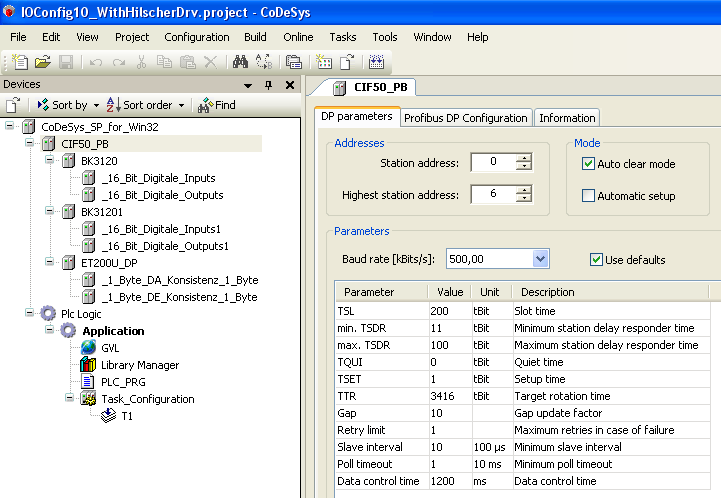

5.7.3.1. Graphical Configuration¶
The IO-configuration in CODESYS is organized as a tree of devices:
The base node for the devices typically is a PLC (the runtime system; sometimes called target). In the example above it is a windows runtime system with the name CODESYS_SP_for_Win32.
A PLC node specifies typically, which kind of devices can be appended under this node. For example on a PC you can append (and physically plugin) PCI cards under this node. These appended devices correspond to the hardware that is plugged and attached to the PLC.
In the example above, a PCI Hilscher Profibus Master Card is appended under the PLC. Under the Profibus Master there are Profibus Slaves to configure the complete field bus. This configuration represents the physical structure of a hardware that is connected and attached on the PLC.